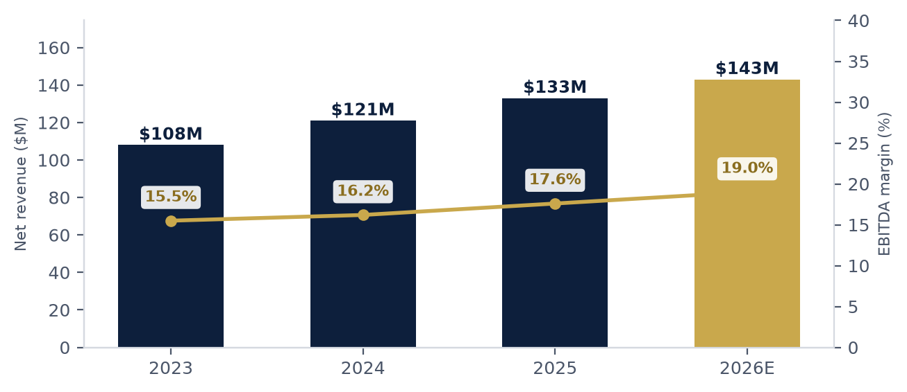

The same verification-led build, pointed at the monthly close. Once the deal is done, or when there is no deal at all, the engagement builds and then runs the reporting infrastructure for any company whose numbers face a board every month. Agentic AI builds and maintains the system, a deterministic engine computes every number, and one intake feeds every deliverable, so the workbook, the deck, and the forecast come off the same figures.
One system, built around the close you already run rather than a template you have to adopt. It starts from the ERP exports and the Excel environment your team lives in today, so there is no platform migration underneath it.
We automate the monthly close cycle from your ERP exports through board pack delivery. The manual export, rebuild, and formatting work comes out of the close, and that time goes back to analysis.
Built from direct experience sitting in PE-reported finance roles. The board package is built to the format your GP expects and the timeline they require, so the quarterly review starts with the story instead of the reconciliation.
We build it, then we maintain it, designed to catch issues before they reach the board. Monthly monitoring, model updates as your business evolves, and on-call support through every close cycle.
Most reporting packages stop at your own numbers. Yours should say how those numbers compare. The peer view is built in, from primary sources, with the citation on every figure.

Every comp set is drawn from SEC filers under the same four-digit SIC code as your company, pulled from EDGAR with the source URL on every figure. Your own metrics are computed from the same intake as your board pack and placed against the peer distribution, with your percentile placement where the filing data supports it.
A written market view for your vertical covers the industry outlook, the KPI framework buyers and boards use to judge companies like yours, public comparables, and your positioning against the sector. Every market figure is dated and sourced. Your own figures tie to the same trial balance as the rest of the package.
The deal is the front door. The build is designed to outlast it, a system specific to your company, your ERP, your investor reporting requirements, and your close schedule, maintained so it keeps running through every close.
We go inside your systems and map what your close actually looks like today. Chart of accounts, close process, the reporting your board sees, and every place a person is doing work a system should be doing. You get a written implementation plan showing exactly what we would automate and in what order.
Agentic AI builds your custom FP&A automation system. The pipeline runs from your ERP exports through variance analysis, rest-of-year reforecast refresh, and a board-ready reporting package, and every build clears an automated quality gate before anything reaches you. One intake feeds the workbook, the deck, and the forecast, so nothing is rekeyed and nothing drifts between them.
The system runs. We keep it running. Monthly data refresh, error monitoring, quarterly model updates, and board cycle support. The board pack comes off the same intake as the close itself, so no rebuild stands between closing the month and reporting it.
Platform vendors sell a license your team then has to learn and run. Embedded consulting firms sell a team. Vantage sells one senior operator, one build, and a system your company can open and trace down to the cell.
Workbooks, models, and board decks are delivered formula-driven and self-contained. You can open it and trace every number down to the cell.
We work from your existing ERP exports in Excel, so there is no IT project and no implementation program underneath the build. One intake feeds every deliverable, nothing is rekeyed, and nothing needs reconciling between the workbook, the deck, and the forecast. That architecture is where the speed comes from, and the automated gate on every build is what keeps it honest.
Every model is built around the operating drivers that actually move your business, things like multi-site P&Ls, utilization and capacity, unit economics, and customer or contract concentration. The architecture is shaped by how your company actually runs, from day one.
The large finance-transformation firms do real work, for companies with the scale and the calendar to absorb a platform implementation. That model is built for far larger enterprises. It asks you to implement a licensed platform and run it, on a timeline that runs longer than a board cycle.
Vantage is built for the company that sits below that line. We work from the ERP exports and Excel environment you already run, build a system specific to your chart of accounts and the reporting template your board or sponsor expects, and hand you every report formula-driven. Then we keep it running every month.
Enterprise firms implement software. Vantage builds the reporting infrastructure your finance function runs on, then keeps it running. At your size, that is the difference that matters.
A reporting system earns its place the first time somebody in a board meeting asks where a number came from. Every figure is produced by deterministic code and every workbook ships formula-driven. An automated quality gate runs on every build. A separate adversarial review, dispatched to a reviewer who did not build the package, argues with the work as well.
Bring your close calendar and the board pack you send today. Twenty minutes tells us both whether there is a build here worth doing.